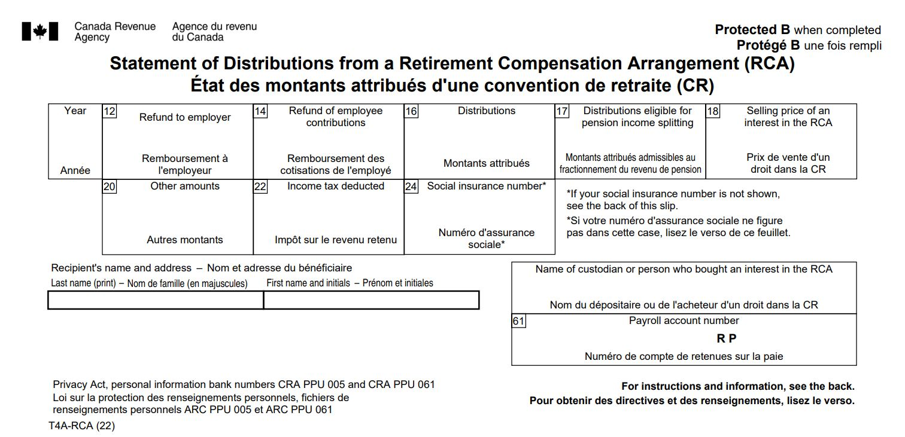

T4A-RCA slip - Retirement Compensation Arrangement (RCA) trust
On this page
What is a T4A-RCA slip
A T4A-RCA slip identifies the amounts distributed during a calendar year to a person from a retirement compensation arrangement (RCA), as a beneficiary of the RCA or if they sold an interest in it. The slip also shows the income tax that was deducted from the amounts distributed to the person.
You can get a Form T4A-RCA in a PDF or PDF fillable/saveable format to file on paper.
Sample
{kind=link}
When to issue
If you are a custodian, you must issue a T4A-RCA slip to each of the following:
- A beneficiary who received a distribution payment from an RCA
- A person who sold an interest in an RCA
Depending on the situation, you may also have to issue a T4A-RCA slip for amounts the RCA trust refunded to the employer or the employee.
What to report
What to report and not report on a T4A-RCA
Report
- Distributions out of an RCA trust to a person that is a resident of Canada
Do not report
- Distributions out of an RCA trust to a person that is a non-resident of Canada, use: NR4 slip
What are the guidelines for filling out slips
Do
- If you have multiple RCA Trust payroll accounts, file a T4A-RCA return for each RCA Trust payroll account
- Amounts are reported on a T4A-RCA slip for the year in which it is paid
- Report, in dollars and cents, all amounts you paid during the year
- Report all amounts in Canadian dollars, even if they were paid in another currency. Learn more about the average exchange rates: Exchange rates
Do not
- Do not show negative dollar amounts on slips, to make changes to previous years. Learn more: Make corrections after filing
- If a box does not have a value, do not enter "nil" or "N/A", leave the box blank
- Do not change the headings of any of the boxes
- Do not enter hyphens or dashes between numbers
- Do not enter the dollar sign ($)
How to fill out
Year
Enter the 4 digits of the calendar year in which you made the payment to the recipient.
Box 12 – Refund to employer
Report the amount, if any, that the RCA trust refunded to a participating employer which is required to be included in their income under paragraph 12(1)(n.3).
Include a transfer of funds from this RCA trust (the transferring plan) to another RCA trust (the receiving plan) if the custodian of the receiving plan is a non-resident, or if the receiving plan is a foreign plan that is considered by subsection 207.6(5) to be an RCA for Canadian residents participating in the plan.
Do not include in box 12 any transfer of funds made directly from a transferring plan to a receiving plan if the custodian of the receiving plan is not a non-resident and the receiving plan is not a foreign plan that is considered by subsection 207.6(5) to be an RCA for Canadian residents participating in the plan.
Learn more: Transferring amounts between RCA trusts
Box 14 – Refund of employee contributions
Report the amount, if any, that the RCA trust refunded to the employee, including voluntary employee contributions made to the RCA.
Box 16 – Distributions
Report the amount you paid to the beneficiary as benefits from the RCA trust.
Do not include a refund of employee contributions or amounts paid to purchase an interest in the RCA.
Box 17 – Distributions eligible for pension income splitting
Report the amount included in box 16 consisting of payments made in the year to the individual out of or under an RCA that:
- Are in respect of a life annuity that is attributable to periods of employment for which benefits are also provided to the individual under a RPP
- Provide benefits that supplement the benefits provided under a registered pension plan (other than an individual pension plan for the purposes of Part LXXXIII of the Income Tax Regulations)
You must include this amount in the calculation of the maximum split pension amount on Form T1032, Joint Election to Split Pension Income, if you are age 65 or more at the end of the calendar year and are electing to split your eligible pension income with your spouse or common-law partner.
Box 18 – Selling price of an interest in the RCA
Report the amount you paid to the recipient for their interest in the RCA (the purchase recipient price before you withheld 50% tax) if you bought an interest in the RCA.
Box 20 – Other amounts
Report the amount if the RCA trust:
- Disposed of property for consideration less than the fair market value (FMV) of the property
- Acquired property for consideration greater than the FMV of the property
- Permitted the RCA trust's property to be used for consideration less than the FMV of such use
Under subsection 56(11), the amount to include in box 20 is the difference between the consideration and the FMV.
Box 22 – Income tax deducted
Report the amount of income tax deducted from distributions or from the purchase price of the interest.
Box 24 – Social insurance number
Enter the recipient's social insurance number.
Recipient's name and address
Enter the last name in capital letters, followed by the first name and initial, of either the individual who received an amount from the RCA, or of the person who sold an interest in an RCA to another person.
If the recipient has more than one initial, enter the recipient’s first name followed by the initials in the ‘First name’ space.
Do not enter titles, such as Director, Mr., or Mrs.
Enter the recipient's home address, including the province or territory, the postal code and the country.
Name of custodian, or person who bought an interest in the RCA
Enter the full name of the custodian or the full name of the person who bought an interest in the RCA.
Box 61 – Payroll account number
Enter the 15-character payroll account number (for example, 123456789RP0001) of the custodian or the person who bought an interest in the RCA.
The account number must be the same as your PD7A.
Do not enter the custodian's account number on the copies you give to the recipients.
Learn more: Receiving payroll correspondence from us